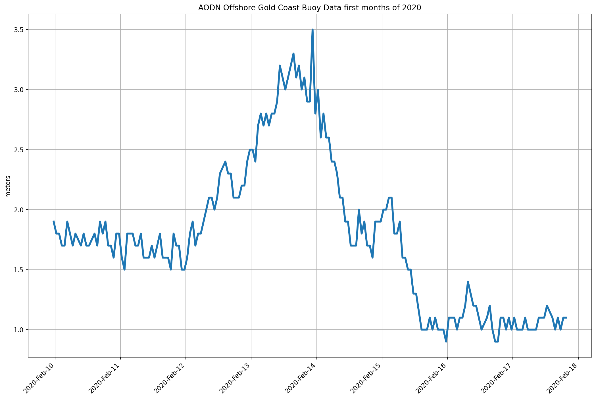

AODN - Wave buoys Gold Coast¶
WHTH sea_surface_wave_significant_height - Significant height of waves on the water body - m ,
WMXH sea_surface_wave_maximum_height - Maximum height of waves on the water body - m ,
WPMH sea_surface_wave_mean_period - Seconds - s
%matplotlib inline
from pylab import *
import netCDF4
import datetime as dt
import numpy as np
import pandas as pd
import matplotlib.dates as mdates
from pylab import rcParams
import warnings
warnings.filterwarnings('ignore')
data_df = pd.read_csv("../pracenv/dataset/Waverider_buoys_Observations-GoldCoast.csv")
dates = pd.to_datetime(data_df['TIME'], format = '%Y-%m-%dT%H:%M:%SZ')
data_df['WHTH']
0 1.9
1 1.8
2 1.8
3 1.7
4 1.7
...
175 1.0
176 1.1
177 1.0
178 1.1
179 1.1
Name: WHTH, Length: 180, dtype: float64
MyDateFormatter = DateFormatter('%Y-%b-%d')
fig = plt.figure(figsize=(16,10), dpi=160)
ax1 = fig.add_subplot(111)
ax1.plot(dates,data_df['WHTH'],linewidth=3)
locator = mdates.AutoDateLocator()
ax1.xaxis.set_major_locator(locator)
ax1.xaxis.set_major_formatter(MyDateFormatter)
ax1.grid(True)
setp(gca().get_xticklabels(), rotation=45, horizontalalignment='right')
plt.title('AODN Offshore Gold Coast Buoy Data first months of 2020')
ax1.set_ylabel('meters')
fig.show()
